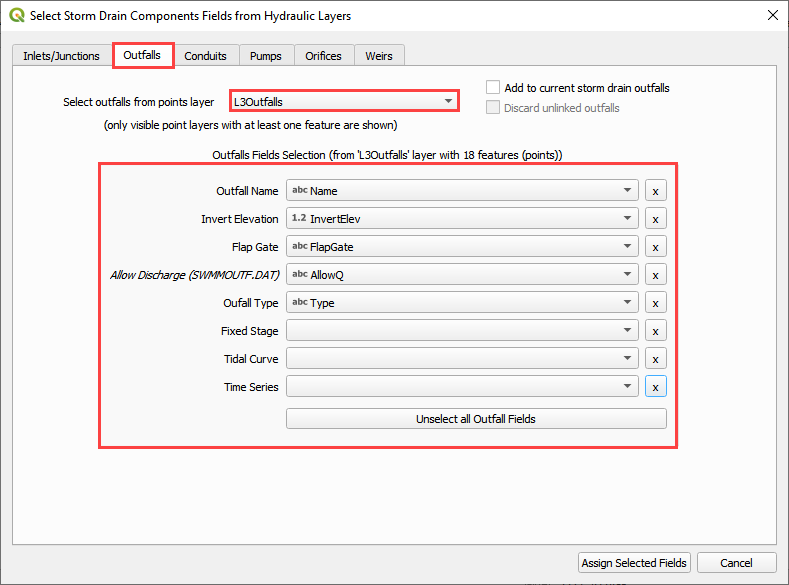
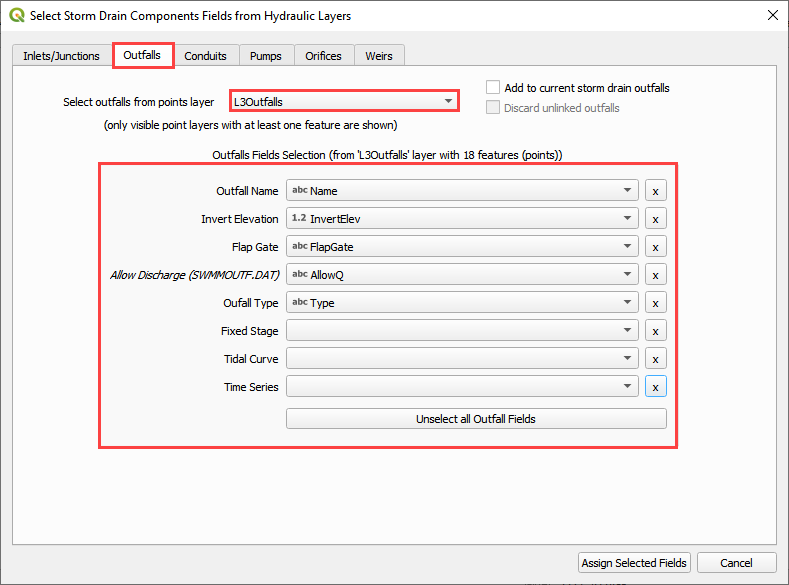

Lesson 3 Advanced - Storm Drain Network#
Overview
This lesson will outline how to construct an advanced storm drain network that is ready for FLO-2D Plugin to process.
Required Data
This lesson starts from the end of the Storm Drain - Shapefile Overview. Please complete that lesson and return here.
File |
Content |
|---|---|
Point shapefile |
Inlets/Junctions, Outfalls, Storage Units |
Polyline shapefile |
Conduit, Pumps, Orifices, Weirs |
*.qgz |
Project file |
*.gpkg |
Geopackage file |
*.txt |
Rating table file |
Step 1: Complete previous lesson#
The Storm drain overview adds the data and gets the project ready. Return to this step once it is finished.
Step 2: Select component fields from the shapefiles#
Expand the Storm Drain Editor widget and click the Select components from shapefile layer button.

Use the Editor to assign all of the fields from the shapefiles.
 



Once all features are selected in the drop-down menus, click Assign Selected Inlets/Junctions, Outfalls and Conduits to create the data structures of the Storm Drain Components.
The following message will be displayed. Click OK.

Step 3: Assign the link node connections#
Click the Simulate storm drain checkbox.
Click the Auto-assign link nodes button and select Conduits.
Repeat the step 3.2 for Pumps, Orifices, and Weirs

The success message identifies the number of links that were automatically assigned an Inlet and Outlet node name.

Step 4: Import rating tables#
Click the Import Rating Table Button

Navigate to the I4 table with this path. Select the file and click Open.
C:\Users\Public\Documents\FLO-2D PRO Documentation\Example Projects\QGIS Tutorials\QGIS Lesson 3\Advanced Storm Drain Shapefiles\I4-37-32-26-1.txt
The table was imported and assigned to the correct inlet node.
If an error was detected because one Type 4 inlet didn’t match a selected text file, it would be reported to this file:

Warning
If a Python error pops up because the Rating Table Warnings file can’t be written, simply perform this step again. The path correction is applied the second time.
Step 5: Set up the pump data#
Click the Add pump curve button.
Name the Pump “P1”.
Set the Pump Type to Pump4.
Add a description. (not required)

Apply a rating table.

Pump instructions can be found in the EPA SWMM 5.0 Help Document

C:\ProgramData\Microsoft\Windows\Start Menu\Programs\EPA SWMM 5.0\EPA SWMM 5.0 Help
Step 6: Review the orifice data#
Select Orifces from the Links menu.
Review the table to identify the important details for this system.

The Invert of this system is set by the cistern1, cistern2, and cistern3 features.
The inlet offset defines the depth to the opening.
The orifice has a 6 inch circular opening that allows water to transfer to the other cisterns.
Click close to close the window.
Step 7: Review the weir data#
Select Weirs from the Links menu.

Review the table to identify the important details for this system.

This weir is a control that of the cistern overflow. The water is retained in the system until it fills the tanks to 4.5 ft. At 4.5ft depth, the water flows out of a V-Notch weir into an outfall node with free bubble up discharge back onto the surface retention basin to the East.

Step 8: Add external inflows#
Open the Inlet/Outlet Node editor.
Find the inlet I3-38-32-2 and load it in the Dialog Box.
Check the External inflow checkbox and click the adjacent button.
Click the browse button next to the Time Series field on the Inlet/Junction dialog box.
Fill the table with the following data and click Save.
Click save on the updated Inlet/Junction dialog box.
Click the final Save button on the larger dialog box.
The final message alerts the user that the process completed without error but the schematized button is required to trigger the data table update.
Step 9: Schematize the storm drain components#
Click on Schematize Storm Drain Components in the Storm Drain Editor widget.
Once the storm drain components are schematized, the following dialog will appear. Click OK to close.
The storm drain schematized data layers have been completed. The storm drain components are now part of the schematized layers in the project.

Step 10: Export the project#
Click the Set Control Variable icon.

Verify the data and Click Save.
This is a good point to save project.

Export the data files to the Project Folder in QGIS Lesson 3
C:\Users\Public\Documents\FLO-2D PRO Documentation\Example Projects\QGIS Tutorials\QGIS Lesson 3\QGIS Lesson 3 Export Advanced
Click OK to export the main project data files.

Save the swmm.inp file with the next dialog. Make sure the path is still Lesson 3 Export.

Check the .INP control variables and click OK.

These are the storm drain components that were written to the swmm.inp file.
The final dialog will be displayed. The associated storm drain data files are created when the storm drain switch has been turned ON.

Step 11: Set up the storage unit data#
Note
The plugin cannot make a storage unit yet. This step will be finished in EPA SWMM GUI. The tutorial will be updated when the storage units are added to the plugin.
Open EPA SWMM GUI
Drag the swmm.inp file onto EPA SWMM 5.0 GUI.
Zoom to the LID system.
Right click the cistern1, cistern2, and cistern3 nodes. Convert them into Storage Units.

Double click each storage unit and set up the storage data.
Under the Data Tab, click Storage Curves and the + button to create a curve named storage1.

Save and close the EPA SWMM GUI.
Make a backup of the swmm.inp file in case it is overwritten by a plugin export.
Step 12: Run the simulation#
Click the Run FLO-2D Icon.

Set the Project path and the FLO-2D Engine Path and click OK to start the simulation.
Set the FLO-2D Folder.
C:\program files (x86)\flo-2d pro
Set the Project Folder.
C:\Users\Public\Documents\FLO-2D PRO Documentation\Example Projects\QGIS Tutorials\QGIS Lesson 3\QGIS Lesson 3 Export Advanced
After the storm drain model is complete, review FLO-2D Storm Drain Manual Chapter 6 for more details about reviewing results.